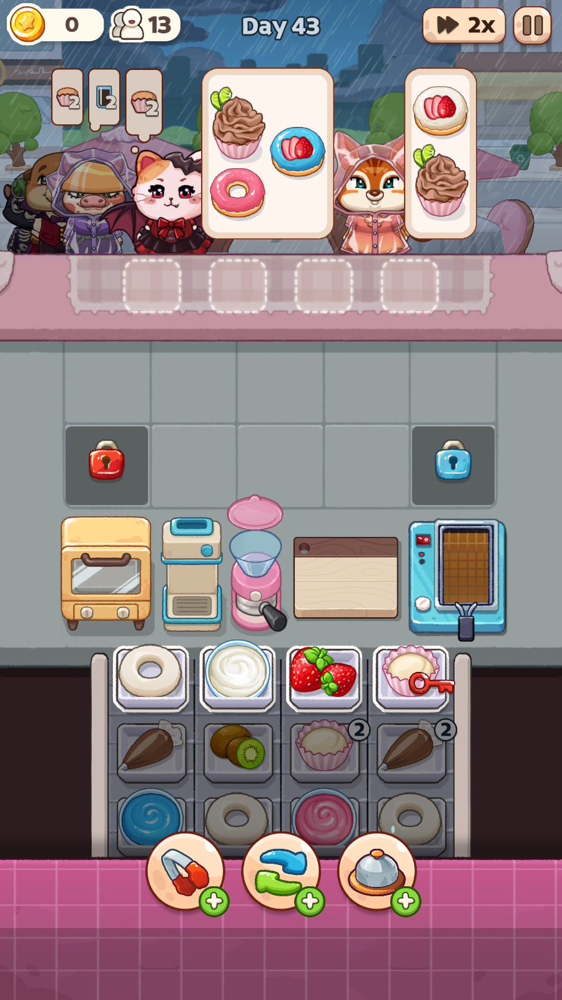
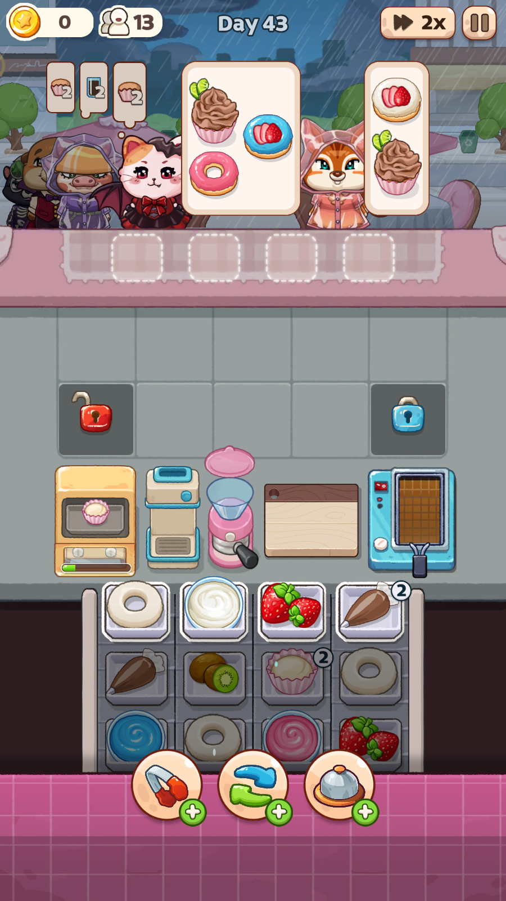

Khoá màu và chìa (Lock & Key, Grid-ColorLock)
Mô tả
- Trên lưới chuẩn bị 5×2 có ổ khoá màu che một số ô; muốn mở phải lấy ô nguyên liệu mang chìa cùng màu trong hàng đợi.
- Chìa gắn vào món trong hàng đợi (token
#3:c); lấy món đó thì chìa bay ~1 giây tới ổ khoá cùng màu, mỗi chìa trừ 1 lượt, về 0 thì ổ mở (còng khoá nâng lên). - 161/1 030 level APK (167/1 090 server live 16/11); ổ khoá và chìa luôn đi cùng nhau trong dữ liệu (cùng số level). Hầu hết cần 1 chìa (319/340 ổ).
- Burger: level 41 là level đầu. Popup "Lock & Key" hiện ở đầu level đầu tiên.
Thiết kế chi tiết
Tóm tắt thiết kế
- Code Hai nửa của cơ chế ở hai chỗ khác nhau: ổ khoá trên lưới (
IngCellStatus) và chìa trong hàng đợi (IngredientSpawnerController.BuildKeyAt), nối bằng màu. - Code Chìa bay đúng 1 giây (
KeyFlyDuration) rồi mới tính vào ổ: có thời gian để người chơi thấy hậu quả. - APK 161/1 030 level (16%); 319/340 ổ chỉ cần 1 chìa; trung bình 2.1 ổ / level.
- Live 16/11 Server live: 167/1 090 level; bento tăng từ 5 lên 18 level.
- Playtest Bản 1.11: coffee L13 có ổ đỏ + xanh, chìa đỏ gắn cupcake; ổ đỏ mở ngay sau khi chìa chạm.
- Nhận định Khoá màu biến hàng đợi thành bài toán "tìm đúng món" thay vì "lấy món gần nhất": buộc người chơi lật hàng đợi (kết hợp tốt với Swap Row và Tongs).
Luồng người chơi từng bước
- Xem ổ khoá và chìaNgười chơi PlaytestLưới có ổ đỏ, ổ xanh; hàng đợi có chìa đỏ trên cupcake.

Coffee L13 (Day 43): ổ khoá đỏ và xanh ở hai ô hàng 2 lưới; hàng đợi có cupcake mang chìa đỏ (bản 1.11, 26/10) - Lấy ô mang chìaNgười chơi CodeChạm ô có chìa;
BuildKeyAttách chìa. - Chìa bayHệ thống Code1 giây tới ổ cùng màu.
- Ổ mởGiao diện PlaytestCòng khoá nâng lên, ô dùng được.

Cùng level: ổ khoá đỏ đã mở (còng nâng) sau khi chìa chạm, ổ xanh vẫn khoá (bản 1.11, 26/10)


Số level dùng ổ khoá màu theo map
| Map | APK: số level (level đầu) | Server live 16/11: số level (level đầu) |
|---|---|---|
| burger | 12 (L41) | 10 (L41) |
| coffee | 21 (L13) | 21 (L13) |
| sushi | 13 (L10) | 14 (L10) |
| pasta | 19 (L4) | 19 (L4) |
| icecream | 28 (L11) | 26 (L11) |
| sandwich | 11 (L12) | 11 (L12) |
| tteokbokki | 15 (L14) | 15 (L14) |
| seafood | 9 (L7) | 9 (L7) |
| dimsum | 15 (L5) | 14 (L5) |
| pizza | 13 (L7) | 4 (L7) |
| bento | 5 (L10) | 18 (L10) |
| croissant | - | 2 (L4) |
| tacos | - | 4 (L10) |
| Tổng | 161 / 1 030 level chơi được | 167 / 1 090 level chơi được |
Ổ khoá và chìa có cùng số level ở mọi map (Data/levels/_stats.json: grid.ColorLock = queue.Key).
Ổ khoá theo (màu, số chìa) trong APK
| Màu / số chìa | Số ổ |
|---|---|
| màu 1, 1 chìa | 113 |
| màu 1, 2 chìa | 5 |
| màu 2, 1 chìa | 87 |
| màu 2, 2 chìa | 5 |
| màu 2, 3 chìa | 1 |
| màu 3, 0 chìa | 1 |
| màu 3, 1 chìa | 60 |
| màu 3, 2 chìa | 6 |
| màu 4, 1 chìa | 44 |
| màu 4, 2 chìa | 1 |
| màu 5, 1 chìa | 15 |
| màu 5, 2 chìa | 2 |
Tổng 340 ổ; nguồn Data/levels/*/L*.json.
Mã hoá trong chuỗi level
| Thành phần | Cú pháp | Ghi chú |
|---|---|---|
| Ổ khoá (lưới) | #4:c:k | c = màu, k = số chìa (k < 2 → 1) |
| Chìa (hàng đợi) | #3:c | gắn sau id món, ví dụ 7#3:1 |
| Hai nửa | cùng màu c | trong dữ liệu APK, ổ và chìa xuất hiện ở cùng 161 level |
Cú pháp theo Tools/data/fp_level_syntax.py.
Vận dụng cho game khác
- Cặp khoá-chìa tách ở hai khu vực của màn hình tạo mục tiêu rõ mà không cần chữ.
- Hoạt hình chìa bay đủ dài để làm phần thưởng nhỏ cho mỗi lần giải được.
Bảng tổng hợp mọi tính năng đã làm chi tiết: FoodiePop_ThietKeChiTiet.xlsx.
Mở khóa & điểm vào
Bật khi phần lưới có #4:c:k và hàng đợi có #3:c. Burger L41, coffee L13, sushi L10, pasta L4, dimsum L5 (xem bảng). Popup intro một lần (PlayerPrefs IntroGridMechanic_ColorLock). Chìa (#3) không có popup riêng.
Điểm vào:
- Đầu level đầu tiên có ổ khoá màu: popup
UIPopup-IntroMechanic-Grid-ColorLock("Lock & Key" / "Got it!") - Màn thắng liền trước: thanh "New Feature" và popup (khoá
Grid-ColorLock) - Lưới chuẩn bị: ô có ổ khoá màu; hàng đợi: món có chìa nhỏ gắn kèm
Cách hoạt động
- Phần lưới của level có ô
#4:c:k:IngCellStatus.Setuptạo mộtColorLockEntry(colorIndex c, số chìa cần k) và vẽ ổ khoá màu (IngCellStateColorLock.Show(colorIndex, keysLeft)). - Phần hàng đợi có ô
#3:c(IngredientSlotStatusKey):StackModeService.BuildCellsFromQueuegánKeyColor = ccho bundle. - Người chơi chạm ô mang chìa; sau khi lấy ô,
IngredientSpawnerController.BuildKeyAttạoKeyObjectmàu c ở vị trí ô. IngredientSpawnerController.UnlockWithKeychuyển chìa tớiIngCellStatus.UnlockColorWithKey, tìm ổ cùng màu bằngTakeColorLock.- Chìa bay
KeyFlyDuration= 1 giây tới ô khoá; khi chạm,OnKeyLandedgiảm số chìa còn thiếu. - Hết chìa:
UnlockColorCellgọiIngCellStateColorLock.PlayUnlock(còng khoá nâng và xoay) rồi mở ô; ô đặt đĩa được như ô thường. - Nếu chưa đủ chìa thì ổ giữ nguyên, số trên ổ hiện số chìa còn thiếu.
Ảnh chụp
Bấm ảnh để phóng to, dùng phím ← → để chuyển ảnh. Nhãn màu cho biết nguồn bằng chứng của ảnh.
Số liệu chính
| Chỉ số | Giá trị | Nguồn |
|---|---|---|
| Level dùng ổ khoá màu (APK) | 161 / 1 030 | Data/levels/_stats.json (grid.ColorLock) |
| Level dùng ổ khoá màu (server live 16/11) | 167 / 1 090 | Docs/LEVEL_DATA.md |
| Tổng ổ / chìa (APK) | 340 ổ / 361 chìa | Data/levels/* |
| Thời gian chìa bay | 1 giây | IngCellStatus.KeyFlyDuration |
| Level đầu (burger) | L41 | Data/levels/_stats.json |
Use case (9)
Bấm vào từng use case để mở. Mở/đóng tất cả
UC-01 Ổ khoá màu xuất hiện
Các bước- Parse lưới
#4:c:k IngCellStatus.Setup→AddColorLock- Vẽ ổ khoá màu và số chìa nếu > 1
| Actor | System |
|---|---|
| Trigger | Level tải xong |
| Điều kiện | Level có #4 |
| Kết quả | Ô lưới bị khoá, không nhận đĩa |
| Quy tắc / số liệu | c = chỉ số màu (APK dùng 1–5); k = số chìa cần (k < 2 → 1). Bản APK: k = 1 ở 319 ổ, k = 2 ở 19, k = 3 ở 1 |
| Evidence | IngCellStatus.Setup |
UC-02 Món mang chìa trong hàng đợi
Các bướcStackModeService.TryGetStatusvớiIngredientSlotStatusKey lấy tham số c- Bundle nhận
KeyColor - Vẽ chìa nhỏ trên món
| Actor | System |
|---|---|
| Trigger | Level tải xong |
| Điều kiện | Level có #3:c |
| Kết quả | Chìa nhìn thấy trên món (Playtest bản 1.11: chìa đỏ gắn cupcake) |
| Quy tắc / số liệu | Dữ liệu APK: màu 1: 123 chìa, màu 2: 100 chìa, màu 3: 73 chìa, màu 4: 46 chìa, màu 5: 19 chìa (tổng 361) |
| Evidence | StackModeService.BuildCellsFromQueue |
UC-03 Lấy ô mang chìa
Các bướcConveyorPickup.TryTapthành côngIngredientSpawnerController.BuildKeyAt(keyColor, pos)
| Actor | Player |
|---|---|
| Trigger | Chạm ô mang chìa ở hàng trên |
| Điều kiện | Ô có chìa ở hàng 0 |
| Kết quả | Chìa tách khỏi món và bay đi |
| Quy tắc / số liệu | Món vẫn đi theo luồng bình thường (trạm / lưới) |
| Evidence | IngredientSpawnerController.BuildKeyAt |
UC-04 Chìa bay tới ổ khoá cùng màu
Các bướcUnlockWithKey→IngCellStatus.UnlockColorWithKeyTakeColorLock(colorIndex)chọn ổ- Chìa bay 1 giây
| Actor | Player |
|---|---|
| Trigger | Chìa vừa được tạo |
| Điều kiện | Có ổ cùng màu chưa mở |
| Kết quả | Ổ khoá nhận chìa |
| Quy tắc / số liệu | Chìa chỉ đi tới ổ có đúng màu |
| Evidence | IngCellStatus.UnlockColorWithKey |
UC-05 Ổ khoá cần nhiều chìa
Các bước- Mỗi chìa đến:
OnKeyLandedgiảmkeysUnassigned/keysShown - Số trên ổ giảm
| Actor | Player |
|---|---|
| Trigger | k ≥ 2 |
| Điều kiện | k ≥ 2 |
| Kết quả | Ổ mở khi đủ chìa |
| Quy tắc / số liệu | Trong APK chỉ có 20 ổ cần ≥ 2 chìa |
| Evidence | IngCellStatus.OnKeyLanded |
UC-06 Ổ mở
Các bướcUnlockColorCellIngCellStateColorLock.PlayUnlock(còng nâng + xoay, phátsfxUnlock)
| Actor | Player |
|---|---|
| Trigger | Chìa cuối chạm ổ |
| Điều kiện | Đã đủ chìa |
| Kết quả | Ô lưới mở, dùng được |
| Quy tắc / số liệu | Playtest bản 1.11: ổ đỏ mở trong ≤ 1,2 s sau khi chạm |
| Evidence | IngCellStatus.UnlockColorCell |
UC-07 Chìa kẹt phía sau
Các bước- Chìa chỉ rời món khi món được lấy
- Món đóng băng không lấy được cho tới khi rã
- Ô khoá chiếm chỗ lưới
| Actor | Player |
|---|---|
| Trigger | Món mang chìa nằm sâu / bị đóng băng / ẩn |
| Điều kiện | Chìa ở ô khác trạng thái |
| Kết quả | Có thể gây kẹt lưới nếu chìa quá sâu |
| Quy tắc / số liệu | Token Key có thể đi cùng #1:n, #2 trên cùng ô theo parser (chưa đếm tổ hợp trong dữ liệu) |
| Evidence | ConveyorLockoutCheck.CanThaw |
UC-08 Popup giới thiệu ở đầu level
Các bướcShowTutorialtìm_introNewGridConfigs(gridEffectType 4)- Mở
UIPopup-IntroMechanic-Grid-ColorLock Variant - "Got it!" →
SetDoneIntroNewGridMechanic
| Actor | Player |
|---|---|
| Trigger | Level có #4 lưới và chưa có cờ IntroGridMechanic_ColorLock |
| Điều kiện | Chưa có cờ |
| Kết quả | Cờ = 1 |
| Quy tắc / số liệu | Chỉ có popup cho ổ khoá (4); chìa (slotStatus 3) không có cấu hình intro |
| Evidence | UIInLevelCakeOrder.IsDoneIntroNewGridMechanic |
UC-09 Popup "New Feature" ở màn thắng liền trước
Các bướcUIPopupNewFeather.GetNewObstacleKeys→Grid-ColorLock
| Actor | Player |
|---|---|
| Trigger | Thắng level N, level N+1 lần đầu có ổ khoá |
| Điều kiện | Level kế có cơ chế mới |
| Kết quả | Báo trước cơ chế |
| Quy tắc / số liệu | Burger: sau khi thắng L40 |
| Evidence | UIPopupNewFeather.GetNewObstacleKeys |
Cấu hình (9)
Gộp mọi nguồn: const trong code, giá trị mặc định trong APK, storage key, AB test, cờ server.
| Nguồn | Key | Kiểu | Giá trị | Ý nghĩa | Nơi định nghĩa |
|---|---|---|---|---|---|
| level string | grid cell token #4:c:k | effect | ColorLock: màu c, cần k chìa (k < 2 → 1) | ổ khoá màu | GridLayoutTranslator.Parse, GridEffectType.ColorLock = 4 |
| level string | queue token #3:c | effect | Key: chìa màu c | món mang chìa | IngredientQueueTranslator.ParseEffectToken, IngredientSlotStatus Key = 3 |
| code const | IngCellStatus.KeyFlyDuration | float | 1 (giây) | thời gian chìa bay tới ổ | AnhPD.FoodOrder.IngCellStatus |
| Data/levels | Phân bố (màu, số chìa) của ổ (APK) | list | (màu 1, 1 chìa): 113, (màu 1, 2 chìa): 5, (màu 2, 1 chìa): 87, (màu 2, 2 chìa): 5, (màu 2, 3 chìa): 1, (màu 3, 0 chìa): 1, (màu 3, 1 chìa): 60, (màu 3, 2 chìa): 6, (màu 4, 1 chìa): 44, (màu 4, 2 chìa): 1, (màu 5, 1 chìa): 15, (màu 5, 2 chìa): 2 | tổng 340 ổ trong 161 level | Data/levels/* |
| Data/levels | Ổ mỗi level | int | 1 ổ: 51 level, 2 ổ: 61 level, 3 ổ: 33 level, 4 ổ: 12 level, 5 ổ: 4 level | level có ổ khoá | Data/levels/* |
| stub | IngCellStateColorLock (prefab) | component | colorSprites[], txtNumber, shackle, shackleLift, shackleLiftDuration, shackleRotateDuration, sfxUnlock | hiển thị ổ khoá và hiệu ứng mở | AnhPD.FoodOrder.IngCellStateColorLock |
| storage key | PlayerPrefs IntroGridMechanic_ColorLock | int | 1 = đã xem | cờ intro | UIInLevelCakeOrder.GetKeyIsDoneIntroNewGridMechanic |
| asset | UINewFeartherConfig["Grid-ColorLock"] | NewFeatherConfig | featherName "Lock & Key"; featherDesc "Find the key somewhere in the ingredient queues to unlock."; key lock_key | nội dung popup New Feature | UINewFeatureConfigObstacle.asset |
| asset (UI_InGame en-GB) | Intro popup text | string | "Lock & Key" / "Find the key somewhere in the ingredient queues to unlock." (prefab: "Find key somewhere in ingredient queues to unlock.") / "Got it!" | popup UIPopup-IntroMechanic-Grid-ColorLock Variant | Map-common_assets/Prefabs/UI/InGame |
Backend / server
| Command | Chiều | Mục đích |
|---|---|---|
Remote Config map_config_<map>_lv_<n> / map_config_<map>_lv_all_override_default | server→client | Chuỗi level (khách ~ lưới ~ hàng đợi) mang token của cơ chế này; server live 16/11 ghi đè 1 090 level (xem Docs/LEVEL_DATA.md). Không có API riêng cho cơ chế. |
Giao diện (UI)
| Element | Class | Mục đích |
|---|---|---|
| Ổ khoá màu trên ô lưới | AnhPD.FoodOrder.IngCellStateColorLock | vẽ ổ khoá, số chìa, hiệu ứng mở |
| Chìa bay | AnhPD.FoodOrder.KeyObject | hoạt hình chìa từ ô hàng đợi tới ổ khoá |
| Popup giới thiệu | CakeOrder.InGame.UIPopupIntroNewMechanics | prefab Grid-ColorLock |
Storage keys
IntroGridMechanic_ColorLock
Còn thiếu / chưa xác minh
- Chỉ số màu 0 có tồn tại không (APK dùng 1–5) chưa xác minh; bảng sprite màu
colorSpriteschưa đọc. - Hành vi khi nhiều ổ cùng màu (chìa đi tới ổ nào trước) chưa đọc trong
TakeColorLock. - Playtest 16/11 (Day 13–20) chưa gặp ổ khoá; ảnh là bản 1.11.
- Không thấy event analytics riêng cho cơ chế này.
Tính năng liên quan
Khối băng theo đơn (Ice Block, Grid-OrderLock) Ô đóng băng (Frozen Item, token #1:n) Ô ẩn (Hidden Item, token #2) Lưới nguyên liệu và hàng đợi Băng chuyền nguyên liệu (ConveyorGrid) Giới thiệu tính năng mới (New Feature x/N) Định dạng level, độ khó & thống kê
Nguồn đã đọc
_analysis/code/decompiled/Assembly-CSharp/AnhPD.FoodOrder.IngCellStatus.c (Setup, UnlockColorWithKey, OnKeyLanded, TakeColorLock, UnlockColorCell)_analysis/code/stubs/Assembly-CSharp/AnhPD.FoodOrder.IngCellStatus.cs_analysis/code/stubs/Assembly-CSharp/AnhPD.FoodOrder.IngCellStateColorLock.cs_analysis/code/decompiled/Assembly-CSharp/AnhPD.FoodOrder.IngredientSpawnerController.c (BuildKeyAt, UnlockWithKey)Data/config/UINewFeartherConfig.jsonDocs/LEVEL_DATA.mdData/levels/*F:/0_Phuc/Clone/Pop/Docs/decode/GAMEPLAY.md (H11, H25, gợi ý 1.11)